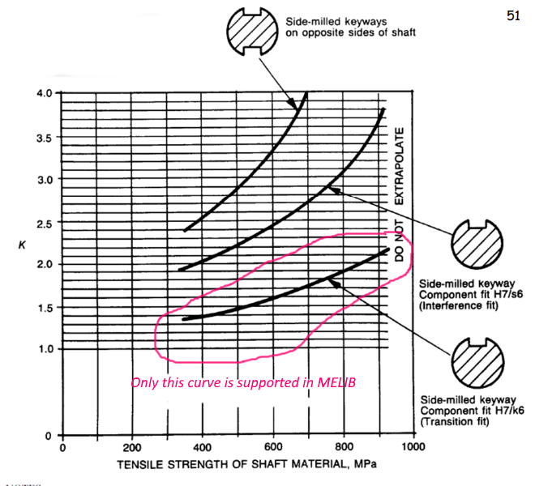

melib API reference¶
library.py
Routines to perform short mechanical engineering design tasks without explicit instantiation.
-
melib.library.agmaI(Np, Ng)[source]¶ Call with
NpandNgas the numbers of teeth for the pinion and the gear, respectively. The returned value is the AGMA Contact Geometry Factor, I. Note that I is the same for the pinion and the gear.Example
agmaI(17, 41)–>> 0.094356
-
melib.library.agmaJ(Np, Ng)[source]¶ Call with
NpandNgas the numbers of teeth for the pinion and the gear, respectively. The returned value is the AGMA Bending Geometry Factors, Jp and Jg, for the pinion and the gear, respectively.Example
agmaJ(17, 41)–>> (0.2890, 0.3891)
-
melib.library.agmaKB(m, t)[source]¶ Call with
mas the gear module in mm andtas the rim thickness in mm.The returned value is the AGMA rim thickness factor,KB.For solid gear blanks, use the gear pitch radius as the rim thickness and the function will return 1.
The function will return a value less than 1 only when the rim thickness is low. Modern gears can usually be designed to deliver a rim thickness factor of 1.0.
Example
agmaKB(3,25)–> 1.0
-
melib.library.agmaKR(r)[source]¶ Call with
ras the required reliability and the function will return the corresponding AGMA reliability factor KR.Example
agmaKR(0.98)–> 0.98333
-
melib.library.agmaKm(fw, d, gearbox, record=False)[source]¶ Call with
fwas the face width in mm,das the pinion diameter in mm, and thegearboxdescribing the application, the function returns the AGMA load distribution factorKm.The allowable values for the case-insensitive string
gearboxare"open gearing""commercial enclosed units""precision""extra precision"Example
agmaKm(80, 160, "commercial enclosed units")–> 1.2275
-
melib.library.agmaKo(sdrive, sload)[source]¶ Call with
sdrivedescribing the drive characteristics andsloadrepresenting the load characteristics and the function will return the AGMA overload factor Ko. The acceptable values are:sdrive : ["UNIFORM", "LIGHT SHOCK", "MODERATE SHOCK"]sload : ["UNIFORM", "LIGHT SHOCK", "MODERATE SHOCK", "HEAVY SHOCK"]Example
agmaKo("light shock", "uniform")–> 1.2The arguments are case-insensitive.
-
melib.library.agmaKs(m, record=False)[source]¶ ” Call with
mas the gear module in mm and the function will return the AGMA shape factorKs.Example
agmaKs(8)–> 1.15
-
melib.library.agmaKv(agmanumber, vt, record=False)[source]¶ Call with
agmanumberas the AGMA quality number (e.g. “A10”) andvtas the pitch line linear velocityPitch line velocity[m/s] = angular speed[rad/s] * pitch radius[m]
The returned value is the AGMA dynamic factor
KvExample :
agmaKv("A11", 10)–> 1.582
-
melib.library.agmastrength(h, surface='none', grade=1, record=False)[source]¶ Call this function with
has the Brinell hardness of the gear material and it will return the AGMA allowable bending and contact stress numbers for Grade 1 AGMA materials.The reference is the AGMA 2001-D04, e.g. as in Mott Figs 9.11 and 9.12. AGMA does not allowable extrapolation for hardness values above 400HB.
- Examples
agmastrength(400)–> (301.5, 1088.6)agmastrength(600)–> (301.5, 1088.6)agmastrength(300)–> (248.2, 866.6)
You may specify Grade 2 by using the argument
grade, e.g.agmastrength(300, grade=2)returns (324.0, 959.5).If a surface treatment is specified by using the argument
surface, the strength is adjusted accordingly by using the AGMA recommendations as tabulated in Mott, Table 9-5.The allowable surface modifications are ‘flame hardened’ and ‘carburised’. The default is no surface modification.
- Examples
agmastrength(300, surface="flame hardened")–> (310, 1207)agmastrength(300, surface="carburised")–> (379, 1241)
-
melib.library.agmayn(Nc, HB=400, surface='')[source]¶ Call with
Ncas tooth design life in terms of number of cycles,HBthe Brinell hardness, andsurfacethe surface condition. The default surface condition is none; the allowable choices are “nitrided” and “case” (short for case-carburised)The returned value is the AGMA Bending Stress cycle factor, YN.
- Example
>>> agmayn(1.e8) >>> 0.9767774605590424
-
melib.library.agmazn(Nc, surface='')[source]¶ Call with
Ncas tooth design life in terms of number of cycles,HBthe Brinell hardness, andsurfacethe surface condition. The default surface condition is none; the only other choice is “nitrided”The returned value is the AGMA Pitting resistance stress cycle factor, ZN.
- Example
>>> agmazn(1.e8) >>> 0.9484368889886681
-
melib.library.alloyprop(x, base, alloyname, props)[source]¶ - Action
Alloy material property look up. Uses the files in the data folder.
- Arguments
x : Xcel pointer to mats.xlsx. See the file for supported metals.
base : Sheet name in matx.xlsx, e.g. steel, alum, titanium, nickel
alloyname : Alloy designation as they appear in column C of the Excel sheet, e.g. “1350-H19”
props : Properties wanted as in the HEADINGS in the file, e.g. [‘SUMPA’, ‘SYMPA’] to get Su and Sy
- Example
>>> xmat=opendatafiles(tags=["mats"])[0] >>> [su, sy, rho]=alloyprop(xmat, "nickel", "N06110", ["SUMPA", "SYMPA", "RHO"]) >>> print(su, sy, rho) >>> 1205.0 1034.0 8330.0
-
melib.library.alumprop(x, alloyname, props)[source]¶ Short cut for alloyprop(x, “alum”, alloyname, props)
-
melib.library.alumweldstrength(base, filler)[source]¶ - Action
Allowable shear stresses for fillet welds on aluminium
- Arguments
base : Designation for the metal joined, e.g. 1100
filler : Filler alloy number, e.g. 4043
- Return
Allowable shear stress in MPa
- Example
>>>alumweldstrength(6061, 5356) # returns 48.00 MPa
-
melib.library.bearingpick(F, ncycles, xb=None, cr=1.0, dmin=array([0, 0]), record=False)[source]¶ This function selects suitable deep groove ball bearings for a shaft supported by two bearings. It picks the first bearing that satisfies the requirements in the
metricsheet of the bearing data file,bearing.xlsxThe function returns a
dictionaryvariable with the fields as defined in the examples below.The arguments to the function are:
F[kN] : The radial load(s). Could be one single force or a numpy array[FL, FR]whereFLandFRare the total radial forces on the left and right bearingsncycles: Required life as number of cycles* Optional Arguments * :
xb: Pointer to the bearing data Excel file (if a different file with the same format but different data is to be used)cr: Reliability factor. The default is 1, corresponding to an L10 life or 90% reliabilitydmin[mm] Minimum bore diameters, reflecting the strength requirement that the shaft segment diameters on the left and right support points cannot be less than these specified values. The minimum of the two dmin values are used. The argument can be a single number or a numpy array. The default value is 0 indicating no diameter requirement.- Examples
>>> bearingpick(120, 2.e6) >>> {'no': 6319, # Bearing number 'bore': 95, # Bore diameter, mm 'C': 153, # Dynamic rating, kN 'rmax': 2.5, # Maximum fillet radius 'dmin': 108, # Minimum shaft shoulder diameter, mm 'dmax': 187, # Maximum shaft shoulder diameter, mm 'mass': 5.65, # Bearing mass, kg 'width': 45, # Bearing width, mm 'req': 151.2, # Required rating (calculated using F and ncycles ) 'constraint':'Load' # Would be 'Dmin' if the choice were based on diameter 'Co': 118 # Static rating
>>> bearingpick(120, 2.e6, dmin=105 >>> {'no': 6226, 'bore': 130, 'C': 156, 'rmax': 2.5, 'dmin': 143, 'dmax': 217, 'mass': 5.8, 'width': 40, 'req': 151.19052598738477, 'constraint': 'Dmin', 'Co': 132}
-
melib.library.bearingrel(r)[source]¶ The bearing reliability factor corresponding to the desired reliability
ris the desired reliability, e.g. 0.90 for an L10 life.- Examples
>>> bearingrel(0.99) >>> 0.21
-
melib.library.bearingscf(uts, record=False)[source]¶ -
Calculates the stress concentration factor for a bearing seat with a K8/k6 transition fit according to AS1403 Figure 5. The other bearing fit in the AS1403 chart is not supported by this function.
The returned value is the stress concentration factor as per Figure 5 of AS1403.
- Example
>>> bearingscf(800) >>> 2.08896825088
-
melib.library.bmdiagram(P, p=0.5, L=1.0, Q=array([0., 0.]), q=0, cc=[], draw=True, vlim=[], mlim=[], xlim=[], xcrit=[], yname='y', zname='z', filename='', fu='N', xu='m', record=False, debug=False)[source]¶ This function can be used to draw the shear force and the bending moment diagrams and calculate the values of the bending moments in the nominated stress points and the reaction forces for a shaft represented as a simply supported beam supported by two bearings (B and C) and subject to two loads (P and Q) as in the following diagram:
P= [Py, Pz] in newtonsp= Position of the P application point from the left end, mQ= [Qy, Qz] in newtonsq= Position of the Q application point from the left end, mL= The distance between the two supports, m
You do not need to include
qandQif there is only one force. The other arguments are:draw: Will draw the shear force and bending moment diagrams if Truexcrit: Will calculate the bending moments at these positionsfilename: Will store the diagrams in the image file “filename”.png
- Examples
>>> P = np.array([-11280, 31000.0]) >>> Q = np.array([2860.0, 7860]) >>> p = 0.185 >>> q = 0.473 >>> L = 0.650 >>> xcrit = np.array([p, q]) >>> filename='examplebmdiagram' >>> (M, B, C) = bmdiagram(P, p, L, Q, q, draw=True,xcrit=xcrit, filename=filename, record=True)
The above will create the following two image files:
and will return
M =
array([[ 1348.8, 199.9], [-4498.7, -2574.1]])B =
array([ 7290.7, -24317.3])C =
array([ 1129.3, -14542.7])
-
melib.library.boltgrades(x, grade, props)[source]¶ - Arguments
x : Pointer to the bolts sheet in the materials data file
grade : Bolt grade, e.g. “4.8”
props : [“Dmin”,”Dmax”,”SUMPA”,”SYMPA”,”PROOF”] or a subset
- Returns v
v[0] = Value from the file for ‘props[0]’
v[1] = Value from the file for ‘props[1]’
etc
- Example
x=opendatafiles([“mats”])[0]
x.sheet(“bolts”)
v=boltgrades(xmat, “4.8”, [“Dmin”, “PROOF”])
print(v) # will print “[ 1.6 310. ]”
-
melib.library.boltpitch(dmajor, coarse=True)[source]¶ - Arguments
dmajor : Major diameter
coarse : True if coarse thread; False if fine thread
Returns pitch[mm] and stress area[mm2] as a tuple
Example
(pitch, At)=boltpitch(42, coarse=False) ==> pitch=3, At=1206
-
melib.library.density(metal, T=[])[source]¶ Returns the density[kg/m3] of the metal. The optional second argument is the temperature[ o C]. Enter
>>> print(thconductivity("?"))
to see the supported metals.
-
melib.library.dgbbrtfacs(e=None, TC=None, Y=None)[source]¶ This function is used in selection of a bearing subject to both radial and thrust loads. As you will see in the lectures, this is an iterative process and this function can be called repeatedly in search of a solution.
The function always returns a tuple with three components (e, TC, Y), one the same as the supplied value and the other two computed by the function. There are three arguments and only one should be specified.
eis specified. The function computes the values of T/Co and Y from the bearing thrust factors table (e.g. Mott Table 14-5)TC(representing T/Co) is specified. The function computes e and YYis specified. The function computes T/Co and e- Examples
>>> dgbbrtfacs(e=0.27) >>> (0.27, 0.07, 1.63) >>> dgbbrtfacs(TC=0.027) >>> (0.218, 0.027, 2.01) >>> dgbbrtfacs(Y=1.15) >>> (0.38, 0.28, 1.15)
-
melib.library.ec3cutoff(detail)[source]¶ - Action
Eurocode 3 Cut-off limits for lattice girder joints as per Table 2.4 in Design Guide, Zhao et al
- Argument
detail : The Detail category from Table B.2, e.g. 56 for K-joint with overlap
- Return
Cut-off limit (the life is indefinite for stress ranges below this limit)
- Example
>>> ec3cutoff(71) # returns 32 MPa
-
melib.library.ec3life(nomstress, tr, joint='K', overlap=True, section='CHS')[source]¶ - Arguments
nomstress : Nominal stress range, MPa
tr : Wall thickness ratio (Chord thickness divided by brace thickness)
joint : ‘K’ or ‘N’
overlap : True if overlap joint; False if joint with a gap
section : Not used. Only CHS are supported
- Returns N
N[0] = Life in cycles for the thickness ratio tr as given
N[1] = Life in cycles for tr as 1.0
N[2] = Life in cycles for tr as 1.40
- Example
ec3life(120.0, 1.2, joint=’N’) # returns (80357,25866,134848) cycles
-
melib.library.fixity(econ, ideal=False)[source]¶ Returns the value of the constant K in the Euler equation for buckling. The arguments are
- econEnd conditions. Could be:
“pinned-pinned” “fixed-fixed” “fixed-free” (or “free-fixed”) “fixed-pinned” (or “pinned-fixed”)
- idealReturns theoretical values if this True.
Otherwise, returns practical values
- Example
>>> Ka=fixity("pinned-fixed") # Actual value For pinned-fixed ends >>> Ki=fixity("pinned-fixed", ideal=True) # Ideal value For pinned-fixed ends
-
melib.library.geartip(dp, m)[source]¶ Call with dp =pitch diameter and m =module both expressed using the same units , e.g. mm. The function returns the tip radius. It is assumed that the addendum is equal to the module.
Example :
geartip(168, 8)–> 184
-
melib.library.huntingteeth(Np, Ng)[source]¶ This function is used by the auto marker.
When the number of teeth on a pinion and the gear has common multiples, there may be preferential matching between gears and this would cause premature wear. When called with
NpandNgas the numbers of teeth on the pinion and the gear, respectively, this function returns0 if
Ngis an integer multiple ofNp0.5 if there is at least one common multiple, e.g. both are even numbers
1 if there are no common multiples
- Examples
huntingteeth(23,46)–> 0huntingteeth(22,46)–> 0.5huntingteeth(23,47)–> 1
-
melib.library.isofits(X=None, d=60.0, s='H7f6')[source]¶ Look up the upper and lower limits for the hole and the shaft for the specified fit. The only fits supported are
Hxfywithx= 1,2,…,11 andy=3,4,…,9 and 3 < D <= 250Hxsywithx= 1,2,…,11 andy=3,4,…,9 and 3 < D <=1250
The data is read from the
fitssheet in theshaft.xlsxfile.- Examples
>>> isofits(d=60.0, s="H7f6") >>> (30, 0, -30, -49) >>> isofits(d=60.0, s="H7s6") >>> (30, 0, 72, 53) >>> isofits(d=110.0, s="H7s6") >>> ((35, 0, 101, 79) >>> isofits(d=2000.0, s="H7s6") >>> SystemExit: isofits: nominal diameter (2000) is too large
-
melib.library.keyseatscf(uts, record=False)[source]¶ - 
Calculates the stress concentration factor for a sidemilled keyway with a H7/k6 transition fit according to AS1403 Figure 7. The other keyways in the AS1403 chart are not supported by this function.
The returned value is the stress concentration factor as per Figure 7 of AS1403.
- Example
>>> keyseatscf(650) >>> 1.6365625047124999
-
melib.library.keysize(d)[source]¶ Returns a tuple (width,height) for the specified diameter, d[mm] as per DIN6885, T1 (and also Table 11-1 in Mott).
Examples
>>> keysize(20) >>> (6, 6) >>> keysize(120) >>> (32, 18)
-
melib.library.mintoothnum(phi)[source]¶ Call with
phias the pressure angle in degrees. Returns the minimum number of teeth allowed on the pinion to prevent interference when driving a rack. The pressure angles of 14.5, 20, and 12 are supported. Reference is Mott, Table 8-7.Example :
mintoothnum(20)–> 18
-
melib.library.mohrcircle(sx, sy, txy, filename='None', figno=1, title="2d Mohr's Circle")[source]¶ - For the 2d stress element:
This function returns the two principal stresses and the maximum shear stress as (s1, s2, taumax) in MPa.
The arguments
sx, sy, txyare as in the figure.If a filename is provided, the Mohr’s circle is drawn into that file.
Otherwise, it is drawn on the screen.
The
fignoandtitleare optional.Example
>>> mohrcircle(10,-4,5,filename="mohrcircle.png", title="melib example") >>> (11.60, -5.602, 8.602)
-
melib.library.opendatafiles(tags=['bearing', 'mats', 'sgear', 'shaft', 'vbelt'], makezip=False)[source]¶ - Action
Opens the Excel files in the data folder and returns file pointers.
- Arguments
tags : Array of strings. Excel file names. All data files will be opened if tags is unspecified.
makezip : Boolean. Whether to add the files to a zip package (used in notebooks).
- Returns
Xcel pointers to the data files. You may have to use these pointers when calling other library functions.
Example
>>> [Xbear, Xmat, Xgear, Xshaft, Xbelt]=opendatafiles()
-
melib.library.scf_roundbartension(D, d=10, r=1)[source]¶ The stress concentration factor for a stepped round bar in tension
D, d, rare the dimensions as in the figure above in mm.- Example
>>> scf_roundbartension(200, 100, 10) >>> 1.964
-
melib.library.scfa(k1, k2, k3=1, record=False)[source]¶ Compute the combined stree concentration factors when two or three stress raising features coincide. The calculation is done as per AS1403 Article 8.2 (d) adapted to three features. The combined the SCF is the sum of the largest SCF plus 0.2 times the sum of the two lesser values. For example, if
k2=max(k1,k2,k3), then the returned value isk2+0.2*(k1+k3).- Example
>>> scfa(2.0, 3.0, 4.0) >>> 5.0
-
melib.library.shaftendur(uts, condition='ground')[source]¶ Call with
uts= Tensile strength[MPa] andcondition= a string describing the surface condition. The returned value is the endurance strength read off the following chart:The valid options for the second argument are:
'ground'(default)'polished''cold drawn''machined'(equivalent to'cold drawn')'hot rolled'
- Example
>>> shaftendur(900,'hot rolled') >>> 212.5
-
melib.library.shaftreliability(rel)[source]¶ relis the desired target reliability, e.g. 0.10 for 10%The returned value is the reliability factor
CR- Example
>>> shaftreliability(0.99) >>> 0.81
-
melib.library.shoulderscf(D, d, R, uts, record=False)[source]¶ Calculates the stress concentration factor for a shaft shoulder according to AS1403.
D, d, Rare the dimensions as shown in the figure above.utsis the tensile strength in MPa.The returned value is the stress concentration factor as per AS1403.
- Example
>>> shoulderscf(200,100,10, 450) >>> 1.6973600000014022
-
melib.library.shrinkscf(uts, record=False)[source]¶ -
Calculates the stress concentration factor for a component fitted onto a shaft using a H7/s6 interference fit, according to Figure 6 of AS1403. The other two fits in the AS1403 chart are not supported by this function.
The returned value is the stress concentration factor as per Figure 6 of AS1403.
- Example
>>> shrinkscf(400) >>> 1.6204761921599997
-
melib.library.sizefactor(dia)[source]¶ diais the shaft diameter in mmThe returned value is the size factor
CSread off a digitised version of the Mott chart Fig 5-9.- Example
>>> sizefactor(200) >>> 0.6964150943396226
-
melib.library.steelprop(x, alloyname, props)[source]¶ Short cut for alloyprop(x, “STEELS”, alloyname, props)
-
melib.library.thconductivity(metal, T=[])[source]¶ Returns the thermal conductivity[W/m-C] of the metal. The second argument is the temperature[ o C]. Enter
>>> print(thconductivity("?"))
to see the supported metals.
-
melib.library.titanprop(x, alloyname, props)[source]¶ Short cut for alloyprop(x, “titanium”, alloyname, props)
-
melib.library.unitconvert(fromunit, tounit)[source]¶ Returns the coefficient to convert a number from one unit to another. For example,
>>> y=x*unitconvert("Calories_per_Cm2Min","W_per_M2")
will convert ‘x’ in units of ‘Cal/(cm2-min)’ to ‘y’ in ‘Watts/m2’.
The supported unit pairs are:
“Calories_per_Cm2Min” —> “W_per_M2”
“Grams_per_Dm2Hr” —> “Kg_per_M2H”
“Lbf_inch” —> “N-m”
-
melib.library.vbeltc1(x, d, D, C)[source]¶ - Arguments
x : Xcel pointer to the belts data file
d : Diameter of the driving pulley[mm]
D : Diameter of the driven pulley[mm]
C : Centre distance[mm]
Returns
[1] = Wrap angle beta (for the driving sheave - see Optibelt catalogue p.73)
[2] = Arc contact correction factor c1 (Optibelt Catalogue Table 22)
Example
x=opendatafiles([“vbelt”])[0]
v=vbeltc1(x, 75, 230, 420)
print(v) # will print “(156.0, 0.99)”
-
melib.library.vbeltlengths(x, beltdes='5V', datumlength=673.0)[source]¶ - Arguments
x : Xcel pointer to the belts data file
beltdes : Belt designation, e.g. “3V” or “5V”
datumlength : Length target for the belt, mm
Returns values read from Optibelt Catalogue Table 25
[1] = Belt designation, e.g. “3V 1060”
[2] = Outside length[mm] of this belt designation
[3] = Length factor, c3
Example
x=opendatafiles([“vbelt”])[0]
v=vbeltlengths(x, “5V”, 673.0)
print(v) # will print “(‘5V 500’, 1270, 0.84)”
-
melib.library.vbeltpower(x, beltdes='5V', rpm=3000, dsheave=100.0, rat=2.0)[source]¶ - Arguments
x : Xcel pointer to the belts data file
beltdes : Belt designation, e.g. “3V” or “5V”
rpm : Speed of the driving pulley[rpm]
dsheave : Diameter of the driving pulley[mm]
rat : Speed reduction across this belt transmission stage
Returns values read from Optibelt Table 41(beltdes=3V) or 43(beltdes=5V)
[1] = PN(Nominal rating,kW) from Optibelt Catalogue Table 41(for 3V) or 43(for 5V)
[2] = Additional power per belt from Optibelt Catalogue Tables 41 or 43(3V or 5V)
Example
x=opendatafiles([“vbelt”])[0]
v=vbeltpower(x, “5V”, rpm=3000, dsheave=100.0, rat=2.0)
print(v) # will print “(24.98, 4.47)”
-
melib.library.weldsize(t)[source]¶ Returns the minimum weld size[mm] for plate thickness ‘t’[mm]
- Argument
t : Plate thickness in mm
- Returns
The minimum weld size[mm] recommended for this plate thickness
- Example:
weldsize(18.0) # returns 6.35 mm
Reference: Mott, Table 20-4 Minimum weld sizes for thick plates
xt.py
Routines to create markdown documents for Jupyter notebooks, PDF files, and some other useful stuff
-
melib.xt.imgplot(X, Y, XXYY, cs='b-', imgfile='', ax=[], xticks=[], yticks=[])[source]¶ This function is used to superimpose my curve on a chart image from a reference. The image should be the box only.
X,YThe data to be plotted (the same units as on the chart image)XXYYThe axis limits [[xmin, xmax], [ymin, ymax]] (from the reference image)csPlot line descriptor, e.g."b--"imgfileThe name of the output, e.g.r"pics\Meshram_Fig6b.png"axThis should not be included at first call. It is used to add curves later.xticksx-axis tick positions you want to see, e.g. [“4000”, “midpoint”, “26000”]yticksy-axis tick positions, e.g. [“ten”, “forty”, “seventy”, “hundred”]The function returns
(figno, ax). Theaxcan be used to add more y(x) curves:e.g. imgplot(X2, Y2, XXYY, “r–”, ax=ax)
The
XXYYin the second call should be the same as in the firstThe
axin the second call is the same ‘ax’ returned by the first callThe
fignocan be used by the calling figure to save or to clear the figureExample
>>> x = np.log10(np.arange(10, 10000, 100)) >>> y = x-np.log10(1.0) >>> XXYY = [[1, np.log10(50000.0)], [-2, 4]] >>> (f, ax) = imgplot(x, y, XXYY, cs='r-',imgfile=r"ashby_strength_density_chart_no_axes.png",xticks=[10, "mid", 100], yticks=[0.01, 10000]) >>> imgplot(x, x-np.log10(2.0), XXYY, 'b', ax=ax) >>> imgplot(x, x-np.log10(10.0), XXYY, 'k', ax=ax) >>> plt.show()
This example draws lines on the following reference chart:
To create the following plot:
-
class
melib.xt.mdx(notebook, page=1, title='', initial='')[source]¶ mdxis a pointer to a markdown file. I use it in creating lecture notes. A typical notebook have an iniialisation cell and then several chapter cells.The structures for these cells are given below. Create a notebook named “XXXX.ipynb” and copy and paste the following code segments into that notebook as separate cells to create an example notebook generated using the
mdxclass.Why should you use `` mdx `` ?
I found it clumsy to create markdown files with interactive live python code snippets in it when using standard markdown only.
Using the class
mdx, all cells in the notebook can be code cells and the whole notebook can run as a single program.The cell contents are created by using the
mdx.write()method. There are special codes starting with:::that can indicate headers, equations, insert images, and many other things. See the write-up for thewritemethod.Initialisation Cell
This will be the first cell in the
ipynbfile and it will have the following structure. This is initialisation for a notebook with three chapter cells and one reference cell at the end.import math import numpy as np from IPython.display import Markdown as md import matplotlib.pyplot as plt import random import sys import os from datetime import datetime, date # import other packages as required # ... # ... Chapter="XXXX" # or any other name YEAR=2021 TOC=["Chapter 1", "Chapter 2", "Chapter 3", "References"] # SECTION=0 MAKEZIP=True # A zip file will be generated (False otherwise) # # Module libraries sys.path.insert(0,r"H:\My Documents\python") # provide full path sys.path.insert(0, r"H:\My Documents\melib_project\melib") # provide full path # from xt import mdx, engfmt, mdxzipopen, mdzip, iswindows, openplot, plotanno from excel import Xcel LIBFILES=["xt.py", "library.py", "excel.py"] # if MAKEZIP: mdxzipopen(Chapter, LIBFILES) # MD=mdx(Chapter,0,title="Example Notebook") # The markdown file pointer MD.write("Created on 6 April 2021. Last Update - "+date.today().strftime("%d/%m/%Y")) MD.toc(TOC,"") # Creates the table contents MD.write("* The notebook source file is `%s.ipynb`"%Chapter) # md(MD.out()) # End of the initiation segment
The following is what you need to generate an HTML page from this notebook.
jupyter nbconvert XXXX.ipynb --no-input --to html
Chapter 1
This is the first chapter in the notebook following the initial cell. All contents will be inserted using the
MD.write()function.SECTION+=1 MD=mdx(Chapter, SECTION, TOC[SECTION-1]) # create the chapter file MD.write("\n\n") MD.write("... blah blah blah :::") MD.write("... even more blah blah blah :::") MD.write("\n\n") md(MD.out()) # close the chapter file
Chapter 2
This is the second chapter in the notebook following the initial cell. All contents will be inserted using the
MD.write()function.SECTION+=1 MD=mdx(Chapter, SECTION, TOC[SECTION-1]) # create the chapter file MD.write("\n\n") MD.write("... blah blah blah :::") MD.write("... even more blah blah blah :::") MD.write("\n\n") md(MD.out()) # close the chapter file
Chapter 3
This is the third chapter in the notebook following the initial cell. All contents will be inserted using the
MD.write()function.SECTION+=1 MD=mdx(Chapter, SECTION, TOC[SECTION-1]) # create the chapter file MD.write("\n\n") MD.write("... blah blah blah :::") MD.write("... even more blah blah blah :::") MD.write("\n\n") md(MD.out()) # close the chapter file
One can have an arbitrary number of chapters. It is preferred to complete with one last segment on references:
The last content cell that contains the bibliography (optional)
SECTION=len(TOC) MD=mdx(Chapter, SECTION, TOC[SECTION-1]) MD.write("Anderson, P., Fouad, A., John Wiley & Sons, publisher, Institute of Electrical Electronics Engineers, & IEEE Xplore , distributor. (2002). Power system control and stability (2nd ed., IEEE Press power engineering series). Piscataway, New Jersey: IEEE Press\n\n") MD.write("Grigsby, L. (2012). The electric power engineering handbook. Power system stability and control (3rd ed.). Boca Raton, FL: CRC Press.\n\n") MD.write("IEEE Sub-synchronous resonance working group, Second benchmark model for computer simulation of sub-synchronous resonance, IEEE Transactions on Power Apparatus and Systems, vol. PAS-104, no. 5, pp. 1057-1066 (1985)\n\n") MD.write("Kundur, P, Power System Stability and Control, Mc-Graw-Hill (1994)\n\n") MD.write("Liwschitz, M M (1941). Positive and Negative Damping in Synchronous Machines, Electrical Engineering, 60(5), 210-213. doi: 10.1109/EE.1941.6432110\n\n") MD.write("Wilti, T (2000). Elecrical Machines, Drives, and Power Systems, 4th ed. Prentice Hall.\n\n") md(MD.out())
Read the following information on the `` write()`` method to see how you can generate cells with interesting content.
-
write(s)[source]¶ This is the main method to populate the MDX notebook cells. Apart from the code segments, the string
sis copied to the markdown file. The code segments start with:::and end with::They are of the following format:
:::code|arg1|arg2::where
codea number that defines the actionarg1the first argumentarg2the second argumentThe following lists what is available through this construct:
:::2
:::2|HTML link|text::The markdown document will displaytextthat will link to the address defined in the first argumentCode 2 Example:
:::2|www.uq.edu.au|University of Queensland:::::3
:::3|filename|caption::will display the image in the first argument.The image file is expected to be in the
picsfolder.The figure numbers are automatically incremented. The second argument is optional. If omitted, then only the figure number will be shown:
Code 3 Examples
:::3|mohrcircle.png|Mohr's circle::# with caption text:::3|mohrcircle.png::# no caption:::30
Similar to :::3 except that the image file is expected to be in the
tmpfolder.:::32
Similar to :::3 except that the image file is expected to be in the
..\picsfolder. This is useful when several notebooks use the same picture collection in the parent folder.:::4
:::4|filename|cover text::the cover text will be a link to a pop-up windowThe image file is expected to be in the
picsfolder.Code 4 Examples
:::4|mohrcircle.png|Click to see Mohr's circle::# pop=up figure. The second argument is the cover text.:::42
Similar to :::4 except that the image file is expected to be in the
..\picsfolder. This is useful when several notebooks use the same picture collection in the parent folder.:::5
:::5|equation|equation name::The equation name can later be used to refer to this equation by number by using theeqnumber()function or :::6 command. The equation name may be left out.Code 5 Examples
:::5|$sin^2(x)+cos^2(x)=1$|trig:::::5|F=ma|Newton:::::5|$y=x^2$::
-
-
melib.xt.mdxzipclose()[source]¶ Do not use this function. It adds double back slash to the zip list file and it confuses zip file creation
-
melib.xt.mdxziplist(files)[source]¶ It adds files to the zip listfile (see mdzip())
- Args:
files (string array): Names of files to archive, e.g. [“xt.py”, “datmats.xlsx”]
-
melib.xt.mdxzipopen(notebook, libfiles)[source]¶ Creates the zip file list and insert the ‘libfiles’ into it
- Args:
notebook : Usually the name of the notebook but could be any string, e.g. “L20” libfiles : File names as an array of strings, e.g. [“xt.py”, “excel.py”]
The name of the list file will be notebook+”_zip.txt”
-
melib.xt.mdzip(zipfile, listfile)[source]¶ Creates a zip archive of all components used in the notebook
- Args:
zipfile : The name of the zip file to be created listfile : The text file containing the file names to be archived (optional)
- For example,
mdzip(“L10”) – Will archive the list in “L10_zip.txt” into “L10.zip” mdzip(“xxxx”, “zzzz.txt”) – Will archive the list in “zzzz.txt” into “xxxx.zip”
-
melib.xt.openplot(figno, aspect=[])[source]¶ - Arguments
figno : Figure numbers
aspect : Aspect ratio, e.g. 0.5 for a rectangle width=2*height
Returns (f1, ax)
f1 = Pointer to the figure (can be used to save the figure, e.g. f1.savefig(“myfigure.png”)
ax = Pointer to the plot axes (use this to plot, e.g. ax.plot((x, y, “r”, label=”Y”)))
Example
>>> x=np.arange(0,10,0.01) >>> y=np.sin(x) >>> (f1,ax)=openplot(1,0.5) >>> ax.plot(x,y,"m",label="sine") >>> plotanno(ax,xlabel="X variable", ylabel="sin(x)", xlim=[1,9], ylim=[0, 1.0], grid="on", legendloc="upper right", title="Example - y=sin(x)")
-
melib.xt.plotanno(ax, xlabel='', ylabel='', xlim=[], ylim=[], grid='on', legendloc='', title='')[source]¶ - For the matplotlib figure axis pointer
ax: Add axis labels (
xlabelandylabel) Axis limits, e.g.xlim(=``[xmin, xmax]`` ) Location for the legend , eg “upper right” Turn the grid lines on and off and a figure title
Example
>>> x=np.arange(0,10,0.01) >>> y=np.sin(x) >>> (f1,ax)=openplot(1,0.5) >>> ax.plot(x,y,"m",label="sine") >>> plotanno(ax,xlabel="X variable", ylabel="sin(x)", xlim=[1,9], ylim=[0, 1.0], grid="on", legendloc="upper right", title="Example - y=sin(x)")
- For the matplotlib figure axis pointer
excel.py
Methods that are used in melib to read, edit and generate excel files
The data folder has design data that are needed by the functions in the library.py file.